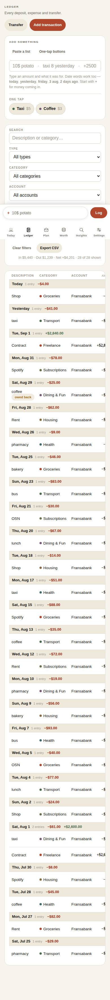
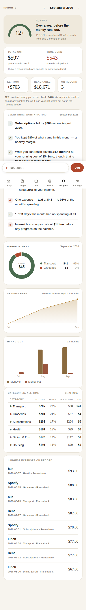
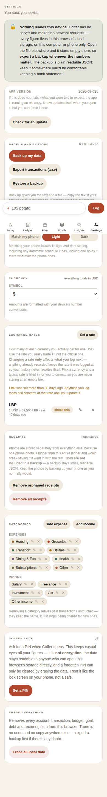
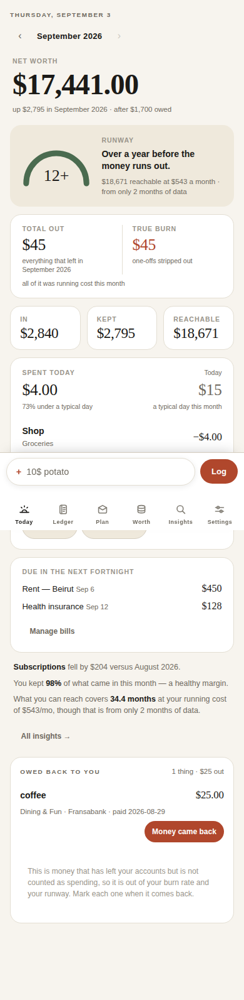
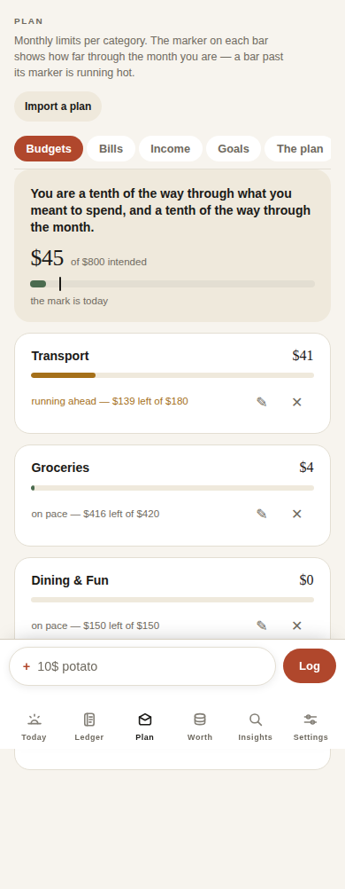
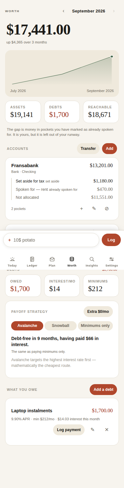

Reference for a design round. Long-press any image to save it. The three that need designing are Ledger, Insights and Settings; the other three are here so the system they have to match is visible.






Generated from the built app at 390 px.
The brief that goes with these is coffer/DESIGN-BRIEF-2.md.